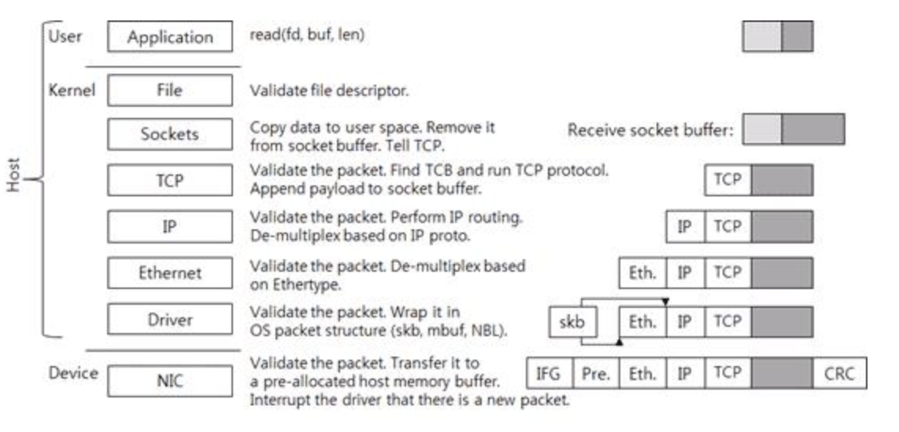
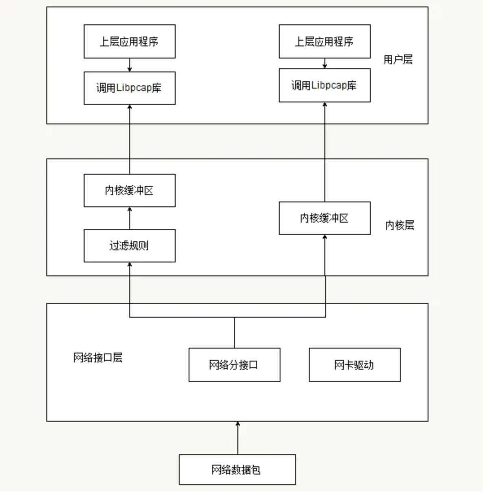

背景
在进程网络日志捕获的技术选型这块的当初想了很久，备选方案有如下几种：
1、cn_proc
2、proc遍历
3、netfilter
4、auditd
5、libpcap
综合考虑得出利弊如下：
1、cn_proc用进程回调代替网络回调，只能抓到进程创建后立即产生网络连接的日志，对于具有潜伏特性或多线程发包的进程这种方式会存在大量漏报；
2、遍历/proc/net/tcp(6)，只能拿到inode，要做进程关联需要去做二次遍历，cpu消耗较大，走调度的话则会漏掉很多数据，无法做稍细的检测，不优雅；
3、netfilter是内核提供的机制，但调研显示不同系统的内核函数具有较大差异，需要做适配，且其hook内核tcp协议栈在大流量环境下会有一定性能影响，但比较好的一点是可以拿到数据包的关联进程信息，不用做二次遍历；
4、auditd同样是内核提供的机制，稳定是其一个优点，但由于是对所有内核系统调用去做过滤，不可避免对内核的负载会较高。
5、libpcap底层基于bpf，稳定是一个特点，但也同样存在无法执行关联进程、性能影响较大的问题。
因为曾经用到过libpcap，且在其性能问题上踩过坑，这边对libpcap的性能问题做下总结。
Libpcap实现机制
正常情况下接收的网络数据包首先会进到网卡，网卡接收到数据包发送中断通知cpu，cpu根据中断号找中断向量和对应驱动的中断处理函数，中断处理函数对网卡过来的数据做一层封装，输出成内核网络包相关数据结构的类型（sk_buff/msbuf），之后发送到数据链路层做报文的合法性检查，然后发送给更上层的tcp/ip协议栈对数据包做报文解析，最终应用层程序通过文件描述符（inode）将内核队列中的网络数据通过socket通道copy到用户态进行处理。大体流程基本就是这样。

libpcap的工作原理如下图所示。当一个数据包到达网卡时，通过内核提供的旁路机制拷贝一份数据包到bpf过滤器，其实现方式是通过创建内核socket，接收来自数据链路层驱动的网络数据包，然后使用bpf自身的the network tap组件接收来自socket的数据包并发送给the bpf filter过滤组件；bpf根据已经定义好的包过滤规则对数据包进行过滤，匹配成功的放到内核缓冲区，并等待用户态调系统调用去取（read）；匹配失败的数据包则直接drop。

性能问题
libpcap的性能问题在于：
1、内核通过旁路机制copy的流量会走bpf过滤，加重了对内核的负担，不过由于libpcap在bpf这块的规则并不复杂，所以影响不是非常大
2、用户态通过系统调用从内核缓存中取数据，而走系统调用在用户/内核间来回切换效率是非常低的，因为系统调用要做一系列操作，包括上下文环境保存、切换内核栈以及某些系统调用额外的一些安全性检查等等，导致的结果就是频繁的系统调用不仅慢而且耗cpu，这个是libpcap性能问题的根源
3、libpcap本身未与进程关联，用户态拿到的还是只是五元组，要与进程关联还是只能遍历proc，这块的cpu消耗也不低，甚至在一些大流量环境下占用会非常高；但是比不调度的纯proc遍历要稍好，毕竟是走网络包回调的。
改进&补救措施
libpcap有一个魔改过的版本叫libpcap-mmap，其通过内核->用户的内存映射将保存bpf滤出的数据存储空间映射为一块共享内存，这样用户态应用程序从队列里取数据就不用走系统调用了。但内核和用户操作同一片内存不可避免容易引起竞态问题，这边暂时不知道libpcap-mmap是怎么处理的，因为也是今天刚看到这个项目，后面调研和测试后再来具体和libpcap对比下优劣势。
总结
比较理想的捕获手段应该是这样的：
1、优雅。尽量不走遍历，最好有直接的回调，信号量也算。
2、稳定。最好是内核机制支持，兼容性好，不需要自己去写lkm。
3、性能。cpu占用<5%
就进程产生网络连接日志捕获这块去做技术选型其实是有难度的，常用的技术就那几个，想要同时满足优雅、稳定、性能三个方面的优势比较难。这三点中主要还是第三点性能这块，因为在生产环境中机器的网络情况既未知也不可控，在大流量环境下不可避免容易出现负载高的性能问题。
但从性能来说最理想的方案其实是hook，因为就hids而言不是所有网络连接的数据包都要去监控到的，我们完全可以只监控进程调socket建立连接的行为，但不管是用户还是内核hook都容易遇到不稳的问题，很容易一不小心就把内核搞崩了。关于这块的研究，还是需要多花点时间去调研。
PS:2020/08/09
偶然和师傅谈到了zeek，底层也是用libpcap实现，但其cpu负载远远小于自己测试的结果，觉得很奇怪就进一步去进行测试，最终发现本地的demo之所以cpu负载高是因为在捕获流量的同时去做了太多的log（printf）及其它的处理，而这些处理函数都要去做系统调用，众所周知系统调用因为要做栈切换、上下文环境保存、参数检查等导致会较慢且耗cpu，而demo中一条流量对处理所用的c api数量大概是1:10+的关系，换算成系统调用则更多，cpu占用高理所当然；经测试把无用的log函数去掉后cpu就降下来了，但是在遍历proc的时候还是会存在短暂超频；现在基本确定是遍历proc这块导致的cpu较高，后期抽空调研下其它技术，如果有能直接从内核拿到对应pid就最好不过了。